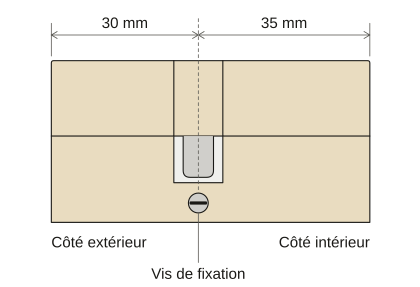

- Accueil
- Guides de serrurerie
- Cylindre A2P : combien d’étoiles ?
Cylindre A2P : quelle étoile choisir pour votre porte
Pour un cylindre A2P, votre contrat d’assurance décide d’abord : le niveau qu’il exige est votre minimum.
S’il ne dit rien, nos repères de serruriers sont une serrure deux étoiles en appartement et trois pour une maison ou un rez-de-chaussée.
Prenez ensuite un cylindre que le certificat de cette serrure nomme : c’est ce qui la garde A2P.
Ce que la certification A2P mesure vraiment
A2P est une marque du CNPP, l’organisme français qui teste et certifie des produits de sécurité.
Le CNPP écrit qu’elle « atteste que les produits répondent à des spécifications techniques définies » et que leur fabrication est maîtrisée.
Le produit passe des essais en laboratoire. Le CNPP audite aussi l’usine qui le fabrique et recommence chaque année pour maintenir la certification.
Il classe les niveaux d’une serrure complète (cylindre compris) par le temps qu’elle résiste en laboratoire à une tentative d’effraction.
Plus le niveau monte, plus les outils de l’essai sont lourds.
Une, deux ou trois étoiles selon le CNPP
| Niveau | Outils de l’essai | Résistance minimale en laboratoire |
|---|---|---|
| A2P une étoile | Outils pour forcer et frapper | 5 minutes |
| A2P deux étoiles | Outils pour forcer, frapper et percer | 10 minutes |
| A2P trois étoiles | Outils lourds pour forcer, frapper et percer | 15 minutes |
Le CNPP le précise sous son tableau : ce sont des temps de laboratoire « où les tests sont intensifs ».
Ils ne tiennent pas compte du bruit d’un vrai cambriolage. D’après le CNPP, ce bruit retarde forcément l’effraction.
Les quinze minutes d’une serrure trois étoiles ont été mesurées sur un banc d’essai face à des outils connus et non sur une vraie porte.
Serrure, cylindre ou porte : qui porte les étoiles ?
Le CNPP certifie la serrure complète. Parmi les pièces qu’il nomme :
- le boîtier, c’est-à-dire la serrure elle-même ;
- la gâche, pièce du cadre où entre le pêne (la barre d’acier qui verrouille la porte) ;
- la sûreté, la pièce où entre la clé (le plus souvent un cylindre) ;
- l’ensemble de manœuvre, autrement dit les poignées.
Sur le certificat de chaque serrure, le CNPP nomme aussi les cylindres qui peuvent l’équiper. Ces cylindres doivent être marqués A2P.
C’est pour cela qu’on trouve des cylindres A2P vendus seuls : ils servent à remplacer celui d’une serrure.
Pour que votre serrure reste A2P, prenez un cylindre que son certificat nomme. Le serrurier le retrouve d’après la marque et le modèle.
Un cylindre A2P posé dans une serrure non certifiée n’en fait pas pour autant une serrure A2P.
Les pages du CNPP ne disent pas ce que valent les étoiles marquées sur un cylindre vendu seul. Dans le doute, partez de la serrure.
Une porte blindée vendue complète est certifiée d’un bloc : le CNPP parle d’« ensembles complets et indissociables ».
La porte, son cadre et ses gonds y passent avec la serrure, le cylindre et la clé.
Le CNPP rappelle que « chaque référence de produit est certifiée individuellement ». Cherchez le marquage A2P sur la pièce elle-même.
Appartement, maison : quel niveau prendre
Les pages du CNPP sur A2P ne conseillent aucun niveau par type de logement.
Voici donc les repères de notre métier. Ce n’est ni une règle ni une norme. Votre contrat passe avant eux.
- Votre contrat exige un niveau : prenez au moins celui-là pour chaque porte qu’il nomme.
- Pour un appartement en étage derrière une porte d’immeuble fermée, prenez une serrure deux étoiles.
- Pour une maison ou un rez-de-chaussée dont la porte donne sur la rue ou un jardin, prenez trois étoiles.
- Pour une cave, un garage ou une porte de service peu exposée, une étoile peut suffire si le contrat ne demande pas plus.
- Si la porte est creuse ou si le cadre bouge, renforcez d’abord la porte : elle peut céder avant la serrure.
À la visite, le serrurier regarde la porte, le cadre et la serrure en place avant de proposer un niveau.
Si l’argent est mieux placé dans un renfort de porte que dans une étoile de plus, il vous le dit.
Votre assureur parle d’A2P : ce qu’il faut lire
Le CNPP écrit que sa marque est « prescrite par la profession de l’assurance ». Seul votre contrat dit ce que votre assureur vous demande.
Cherchez dans les conditions la clause qui parle des serrures.
Notez si elle vise la serrure ou le cylindre, combien d’étoiles elle demande et pour quelles portes.
Si la clause parle d’une serrure A2P, un cylindre A2P posé seul ne suffit pas forcément : demandez à votre assureur ce qu’il attend.
Méfiez-vous des phrases du type « la plupart des assureurs exigent deux étoiles » : celles que nous avons lues ne citent aucun contrat.
Gardez la facture du serrurier : elle nomme chaque pièce posée.
Mesurer votre cylindre avant d’en changer
Un cylindre européen se mesure en millimètres de part et d’autre de la vis qui le tient.
Cette vis traverse la têtière, la plaque de métal visible sur la tranche de la porte.
Mesurez du milieu de la vis jusqu’à chaque bout du cylindre : côté extérieur puis côté intérieur. On l’écrit par exemple 30 × 35.
Il ne doit pas dépasser de plus de quelques millimètres de la rosace, la pièce autour du trou de la clé. Au-delà, il offre une prise.

Le changer soi-même, ou le faire poser
Un cylindre européen tient par une seule vis qu’on atteint porte ouverte. Beaucoup de gens le changent eux-mêmes quand ils ont la bonne longueur.
Faites-le poser si la clé force déjà, si la serrure ou la porte sont abîmées ou si vous voulez un avis sur le niveau à prendre.
Une pose se fait sur rendez-vous : la visite et le devis sont gratuits.
Un dépannage compte 75 € TTC de déplacement et de diagnostic, ou 95 € TTC de 21 h à 6 h.
Cette somme est comprise dans le prix si vous acceptez le devis. Si vous le refusez, vous réglez seulement cette somme.
Ce qu’on nous demande sur les cylindres A2P
Quelle différence entre A2P 1, 2 et 3 étoiles ?
Ils diffèrent par les outils de l’essai et le temps tenu en laboratoire : 5 minutes pour une étoile, 10 pour deux et 15 pour trois.
Un cylindre A2P est-il obligatoire ?
C’est une certification volontaire du fabricant. Votre contrat d’assurance peut l’exiger : relisez sa clause sur les serrures.
Comment savoir si mon cylindre est A2P ?
Cherchez le logo A2P, souvent gravé sur sa face. Le certificat de votre serrure, sur le site du CNPP, nomme les cylindres admis.
Un cylindre A2P a-t-il forcément une carte de propriété ?
Non. La carte de propriété sert à refaire des clés et vient du fabricant. Les pages du CNPP sur A2P n’en parlent pas.
Sources
- CNPP : « Certification A2P : pour vos produits de sécurité », lue le 26 octobre 2026.
- CNPP : « Serrures de bâtiment, certification A2P », pour les niveaux et la note sur les essais. Lue le 26 octobre 2026.
- CNPP : « Blocs-portes, certification A2P », lue le 26 octobre 2026.
- CNPP : « Certifications des produits de sécurité », lue le 26 octobre 2026.
- CNPP : « Liste des certifiés » des produits, consultée le 26 octobre 2026.
- CNPP : annexe au certificat A2P de serrure de bâtiment n° 1.198 du 29 mai 2026 (les cylindres nommés pour cette serrure), lue le 26 octobre 2026.
- CNPP : annexe au certificat A2P de serrure de bâtiment n° 3.16 du 19 novembre 2021 (« seuls les cylindres équipant ces dites serrures doivent être marqués A2P »), lue le 26 octobre 2026.